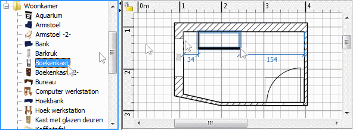

| Deuren, ramen en meubilair toevoegen | |||
Om deuren, ramen of meubilair aan je huis toe te voegen, moet je ze een voor een van de catalogus naar de plattegrond of meubilairlijst slepen.  Je kunt ook een of meer meubelstukken selecteren en dan Meubilair > Toevoegen aan huis kiezen of op de Toevoegen aan huis knop klikken.
Wanneer meubelstukken in de meubilairlijst zijn geplaatst of toegevoegd via Meubilair > Toevoegen aan huis, is de hoek linksboven ingesteld op (0, 0). De meubelstukken die aan het huis worden toegevoegd, worden tegelijkertijd in de meubilairlijst, de plattegrond en het 3D beeld geselecteerd en getekend. Tijdens het laden van het 3D model zullen de toegevoegde stukken als een witte kubus worden weergegeven in het 3D beeld. |
|